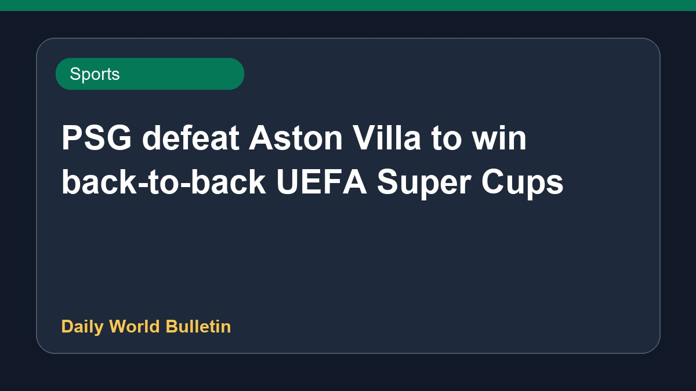

PSG defeat Aston Villa to win back-to-back UEFA Super Cups

Paris Saint-Germain successfully defended their title by defeating Aston Villa in the UEFA Super Cup match held in Salzburg. Désiré Doué scored the crucial winning goal to secure a 2-1 victory for the French club. This triumph marks back-to-back European Super Cup titles for PSG. Meanwhile, Aston Villa put up a strong fight but ultimately fell short against the defending champions in the hard-fought encounter.
Original source: Sports News Sources
PSG win back-to-back UEFA Super Cups with victory over Aston Villa - Al Jazeera ↗
PSG win back-to-back UEFA Super Cups with victory over Aston Villa - Al Jazeera ↗